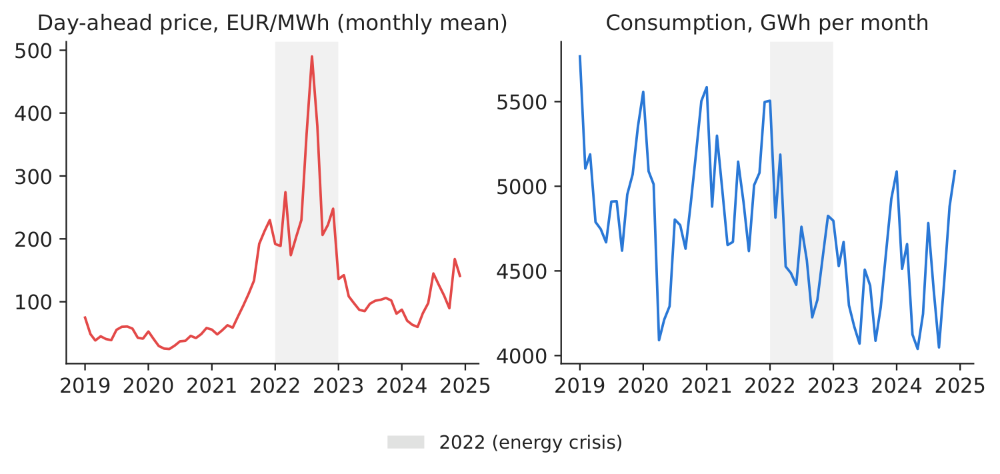
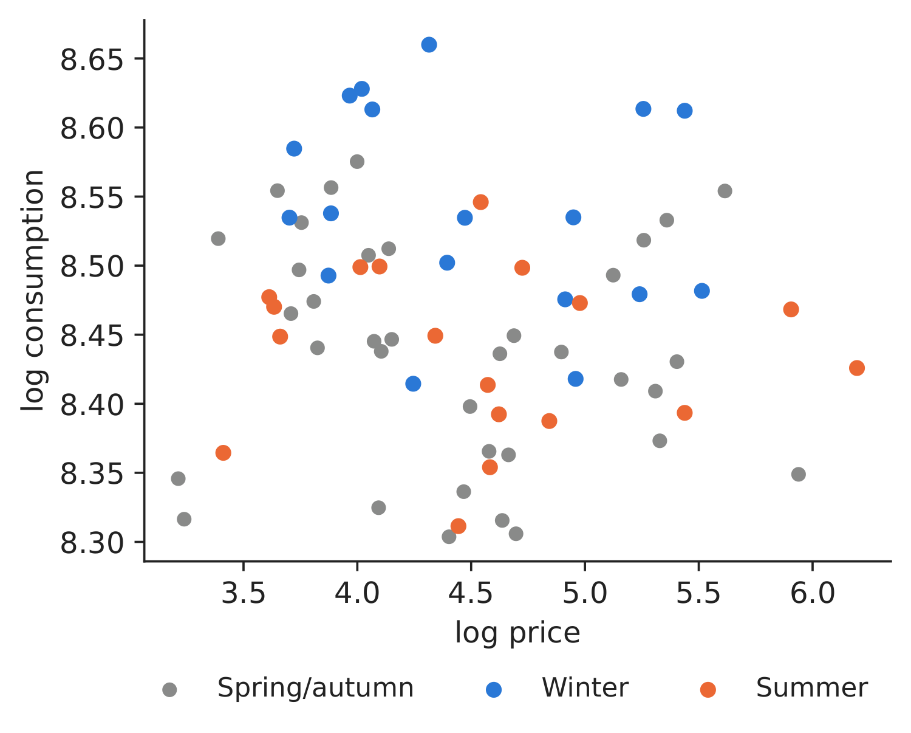
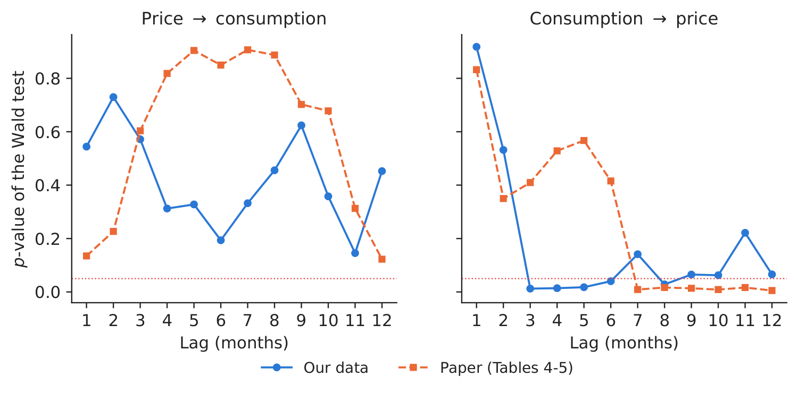
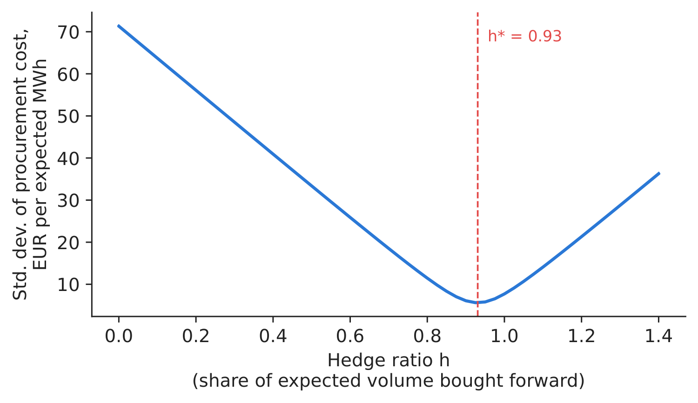

Case study 5 · Lecture 5
Price response of electricity demand — elasticity, causality and the supplier's hedge ratio
Prof. dr. Daniel Traian PELE
Bucharest University of Economic Studies, Department of Statistics and Econometrics
Romanian Academy, Institute for Economic Forecasting
The paper
Proșcanu, C., Proșcanu, M. & Pele, D. T. (2025). The price elasticity of electricity demand in Romania. Journal of Social and Economic Statistics, 14(2), 131–141. doi:10.2478/jses-2025-0009
Materials
The business question
A Romanian supplier signs one-year fixed-price contracts with households and small businesses for next year. To lock in its margin it buys the expected volume forward (or through a PPA, a power purchase agreement) and buys or sells the difference on the day-ahead market. The head of portfolio management must decide the hedge ratio: what share of the expected volume to buy forward. If customers consumed less when prices spike, a partial hedge would be enough (the volume would hedge itself); if they do not, the supplier must hedge almost everything. So: does Romanian demand react to price?
Why this paper for Lecture 5. The elasticity is an input to the hedge ratio and to the volume clauses of supply contracts and PPAs. Complementary research of our group, Shahar, Lessmann & Pele (2025, arXiv 2507.12331), finds that US (United States) retail liberalisation lowered residential prices by about 7 % in the short term — a market-design perspective based on US state data; this case focuses on Romanian procurement.
The reference paper
Question. What is the causal relationship between electricity consumption and price in Romania, and how elastic is consumption to price (Abstract; p. 134)?
Data. Monthly price (EUR/MWh) and consumption for Romania, January 2019 – December 2024, 72 observations, from Ember and Statista (p. 133); mean price 112.13, maximum 490.80 (Table 1).
Method. Augmented Dickey–Fuller (ADF) unit-root tests; a regression of log consumption on log price with seasonal ARMA (autoregressive moving average) errors (SARIMA, seasonal ARIMA: AR(1), SAR(12), MA(1), SMA(12)); Granger causality tests from a vector autoregression, lags 1 to 12.
Main findings of the paper.
- Price is integrated of order 1 and consumption of order 2 (Tables 2–3, p. 135–136).
- “The estimated price elasticity of consumption is positive but notably small in magnitude (0.056), statistically significant at the 1 % level” (p. 137); coefficient 0.055866, standard error 0.017736 (Table 7, p. 138).
- “A unidirectional Granger causality relationship from electricity consumption to energy price” (p. 137): no lag is significant from price to consumption; from consumption to price, lags 7–12 are significant (Tables 4–6, p. 136–137).
- Tariffs and long-term contracts “shield end consumers from immediate fluctuations in spot prices” (p. 137); “pricing mechanisms alone may not be effective in managing electricity demand” (p. 139).
The method, step by step
Intuition of the method
Elasticity answers: “if the price rises by 1 %, by how many % does consumption change?”. For a good people cannot do without, the answer is close to zero. Granger causality answers a different question: “do past values of \(X\) help forecast \(Y\)?”. It is about forecasting, not about cause in the everyday sense.
Let \(C_t\) be consumption (GWh) and \(P_t\) the average day-ahead price (EUR/MWh) in month \(t\). The paper estimates
where \(\beta\) is the elasticity, \(L\) is the lag operator (\(L u_t=u_{t-1}\)), \(\phi,\Phi\) are the regular and seasonal autoregressive coefficients, \(\theta,\Theta\) the moving-average ones and \(\varepsilon_t\) white noise. Identification: price and consumption are set together by supply and demand; in a cold month both demand and prices are high. Our extension adds two-stage least squares (2SLS): the gas price \(G_t\) moves the cost of the marginal power plant (supply) and is assumed to affect consumption only through price, so stage 1 predicts \(\ln P_t\) from \(\ln G_t\) and month dummies, and stage 2 regresses \(\ln C_t\) on the predicted price. For the hedge, the supplier's cost per expected MWh is \(Q_tP_t-h\,(P_t-F)\), with \(Q_t\) the volume relative to plan and \(F\) the forward price; its variance is minimised at \(h^*=\mathrm{Cov}(Q_tP_t,P_t)/\mathrm{Var}(P_t)\). With \(Q_t\equiv1\) (perfectly inelastic demand and a perfect plan) \(h^*=1\).
In practice
With near-zero elasticity, volume does not fall when price spikes: there is no natural hedge, and a supplier with fixed-price contracts should buy forward close to 100 % of its expected volume.
Replication on the course data
Notebook C5_notebook_EN.ipynb: hourly ENTSO-E (European Network of Transmission System Operators for Electricity) load summed to GWh per month and hourly day-ahead prices averaged per month (energy-charts.info), January 2019 – December 2024, 72 months — the paper's sample;
monthly TTF (Title Transfer Facility) gas (World Bank) as instrument. Our mean price is 112.1 EUR/MWh (paper: 112.13), maximum 490.3 (paper: 490.80).

Figure 1. Monthly price and consumption; 2022 shaded.
Source: energy-charts.info; 01.2019–12.2024.

Figure 2. log consumption vs log price, by season.
Source: energy-charts.info; 01.2019–12.2024.
Table 1. Price elasticity of consumption.
| Series | ADF statistic | \(p\)-value (ours) | \(p\)-value (paper) |
|---|---|---|---|
| Price, level | \(-\)1.809 | 0.3759 | 0.3780 |
| Price, 1st difference | \(-\)7.382 | 0.0000 | 0.0001 |
| Price, 2nd difference | \(-\)7.729 | 0.0000 | – |
| Consumption, level | \(-\)1.277 | 0.6396 | 0.5313 |
| Consumption, 1st difference | \(-\)2.360 | 0.1534 | 0.1799 |
| Consumption, 2nd difference | \(-\)10.811 | 0.0000 | 0.0001 |
| Estimate | Elasticity | Std. error | \(t\) |
|---|---|---|---|
| Paper (Table 7): SARIMA errors, 2019–2024 | 0.0559 | 0.0177 | 3.15 |
| Ours: same specification | 0.0644 | 0.0182 | 3.53 |
| Ours: OLS (ordinary least squares) + month dummies | \(-\)0.0213 | 0.0134 | \(-\)1.60 |
| Ours: 2SLS, gas price as instrument | \(-\)0.0231 | 0.0109 | \(-\)2.12 |
Source: our computation; paper values from Tables 2, 3 and 7. “0.0000” means below 0.00005.
What our data show. The unit-root tests agree with the paper (price: \(p\) = 0.376 in levels; consumption still non-stationary after one difference, \(p\) = 0.153). With the paper's specification we obtain an elasticity of 0.0644 (s.e. 0.0182), close to the paper's 0.0559 — positive and small. Our extensions give \(-\)0.0213 (s.e. 0.0134) with month dummies instead of seasonal ARMA errors, and \(-\)0.0231 (s.e. 0.0109) with gas as an instrument (first-stage \(F\) = 1,382.4). All versions say the same thing for a manager: demand barely reacts to price (a 10 % price rise changes consumption by less than 1 %). Granger tests: price does not help forecast consumption at any lag (smallest \(p\) = 0.145); consumption helps forecast price at 5 of 12 lags (smallest \(p\) = 0.012 at lag 3) — the same direction as in the paper, which finds lags 7–12.

Figure 3. Granger causality \(p\)-values by lag, ours vs the paper; dotted line: 5 %.
Source: our VAR (vector autoregression) on energy-charts.info data; paper Tables 4–5.

Figure 4. Risk of the procurement cost vs hedge ratio.
Source: our computation, monthly 2016–2025.
Decision number. Using last year's volume of the same month as the plan, the volume surprise and the price are correlated at \(-\)0.31 over 120 months; the minimum-variance hedge ratio is \(h^*\) = 0.93, and hedging at \(h^*\) removes 92.1 % of the standard deviation of the procurement cost (in sample: \(h^*\) is estimated and evaluated on the same months). Out of sample, \(h^*\) estimated on January 2016–December 2020 (1.06) and applied to January 2021–December 2025 removes 81.3 %. Buy forward about 0.93 of the expected volume; an elastic customer base would justify a lower ratio, ours does not.
Discussion questions for managers
- How would you distinguish an aggregate price–consumption estimate from the response of one customer facing a tariff change? What extra data would support contract design for flexible customers?
- Households were under price caps from 2022 to mid-2025. How do caps change the price a household actually sees, and what does that do to measured elasticity?
- Which of your customers are price-elastic (industry with flexible processes, electric heating, EV, electric vehicle charging)? How would you price that flexibility in a contract?
- Your hedge ratio is 0.93. What happens to the supplier if it hedges only 70 % and a 2022-type year comes?
- “Consumption Granger-causes price” — how would you use this in a forecasting model for the trading desk (see Case 2)?
Limitations of the classroom replication
(i) 72 monthly observations and one regressor; no temperature control. (ii) Wholesale price, not the retail tariff that consumers pay (often capped or fixed). (iii) Identification: aggregate price and consumption are set jointly; our instrument must affect consumption only through price (gas may also affect industrial activity). (iv) The hedge ratio assumes a forward at a fixed price for the whole year and ignores the shape (profile) risk of Case 4.
Summary of Case 5
- QuestionDoes demand fall when price rises, and how much of the volume should a supplier hedge?
- DataMonthly RO (Romania) consumption (GWh) and day-ahead price, 2019–2024 (72 months); TTF gas.
- MethodADF; log–log regression with SARIMA errors; 2SLS with gas; Granger; minimum-variance hedge.
- ResultElasticity 0.0644 (paper 0.056); with gas instrument \(-\)0.0231. \(h^*\) = 0.93.
- DecisionNo natural hedge: buy forward close to the full expected volume.

Source: our computation on energy-charts.info data, monthly 2016–2025.
Abbreviations
| ADF | Augmented Dickey–Fuller |
|---|---|
| AR | autoregressive |
| ARIMA | autoregressive integrated moving average |
| ARMA | autoregressive moving average |
| ENTSO-E | European Network of Transmission System Operators for Electricity |
| EV | electric vehicle |
| MA | moving-average term |
| OLS | ordinary least squares |
| PPA | power purchase agreement |
| RO | Romania |
| SAR | seasonal autoregressive term |
| SARIMA | seasonal ARIMA |
| SMA | seasonal moving-average term |
| TTF | Title Transfer Facility |
| US | United States |
| VAR | vector autoregression |
The text, numbers, charts and tables of this page are those of the case brief; every number is computed by the case notebook on the course data.